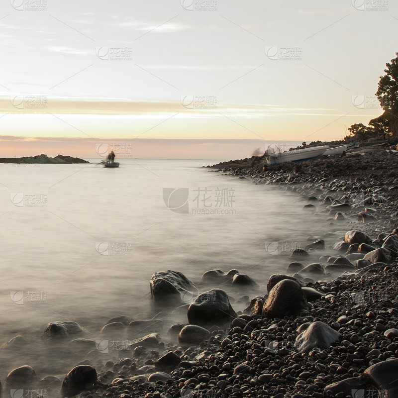

当前位置：首页>关于我们
 水墨（风格）摄影和传统的水墨画一样，现市面上出现的水墨摄影作品，按题材，可以分为风景和花鸟，对应国画中的山水画和花鸟画；按手法和意境，可以分为抽象和具象，对应国画中的写意和工笔。 水墨风格的摄影照片虽然免不了使用Photoshop等软件的后期加工，但是这并不意味着可以任意扭曲原照片。全息摄影是指一种记录被摄物体反射波的振幅和位相等全部信息的新型摄影技术。普通摄影是记录物体面上的光强分布，它不能记录物体反射光的位相信息，因而失去了立体感。全息摄影采用激光作为照明光源，并将光源发出的光分为两束，一束直接射向感光片，另一束经被摄物的反射后再射向感光片。人眼直接去看这种感光的底片，只能看到像指纹一样的干涉条纹，但如果用激光去照射它，人眼透过底片就能看到原来被拍摄物体完全相同的三维立体像。一张全息摄影图片即使只剩下一小部分，依然可以重现全部景物。全息摄影可应用于工业上进行无损探伤，超声全息，全息显微镜，息摄影存储器,全息电影和电视等许多方面。